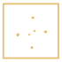

01 / THE STARTING POINT · 2024
Half of whatthe country eatsgrows in the country.
Domestic production covered half of the available food energy in 2024. The other half crossed a border.
OBSERVED · 2024 · FOOD ENERGYAgristat, Food Balance 2024 ↗
OPEN DATA / FOOD × TERRITORY
Following Swiss food from field to shelf, and finding where "made here" stops
How will Switzerland feed itself as the climate changes? Follow what it produces, what crosses its borders, and how farming shares a finite landscape with cities, forests and mountains. The data answers part of that question, and refuses the rest.
01 / THE STARTING POINT · 2024
Domestic production covered half of the available food energy in 2024. The other half crossed a border.
OBSERVED · 2024 · FOOD ENERGYAgristat, Food Balance 2024 ↗
THE PLATE / AVAILABLE FOOD MASS
809 kg of food per person per year comes in by weight, about 2.2 kg a day, 505 kg of it plant and 304 kg animal. Behind every share is somebody deciding what to buy, what to cook, and what to leave on the shelf.
OBSERVED · 2024 · MASS BALANCEAgristat, Table 7, mass balance ↗
02 / ONE AVERAGE, DIFFERENT DEPENDENCIES
93% of animal-food energy came from domestic production. For plant foods it was 31%. One average hides both.
OBSERVED · 2024 · DIFFERENT GROUP DENOMINATORSAgristat, Food energy Table 8, and Feed balance ↗Agristat / Feed balance ↗
03 / CLIMATE MEETS THE HARVEST
The domestic share fell from 54% to 50% in a single year, because a bad harvest is not a long-term trend, it is a warning about exposure.
OBSERVED · 2023→2024 · NOT A LONG-TERM PROJECTIONAgristat, 2024 weather and food balance ↗
PRODUCTION IN SWITZERLAND / AVAILABLE ENERGY
A national percentage describes an outcome.
What is grown here, imported, transformed or exported? To understand the 50%, we need to follow the food through the systems that produce it.
04 / THE DEPENDENCY SYSTEM
Grown here, imported as an ingredient, processed here, stored, eaten or sold on. Follow the route instead of the flag.
EDITORIAL SYNTHESIS · FOOD BALANCE + TRADEAgristat food balance, BLW data portal ↗BLW data portal ↗
05 / MILK · LAND → FOOD
Around 17,300 dairy farms market roughly three million tonnes of milk a year. About half of it becomes cheese and quark, from grassland that cannot be conjured into being.
OBSERVED · APPROX. ANNUAL MILK VOLUMEBLW, Milk and dairy ↗
06 / WHEAT · HARVEST → RESPONSE
Around 250,773 tonnes of bread-quality grain came in with the 2024 harvest. When it fell short, stocks, imports and milling showed up in the numbers.
OBSERVED · 2024 · BREAD-GRAIN HARVESTswiss granum, 2024 balance, and BLW, Bread grain ↗BLW / Bread grain ↗
07 / COFFEE · INPUT → TRANSFORMATION
Imported beans can be processed, packaged and traded from Switzerland. Cultivation happened somewhere else entirely.
DOCUMENTED · COFFEE PROCESSING + TRADEWITS, 2024 exports ↗
08 / THREE WAYS TO BE “SWISS”
Milk rests on territory, wheat on risk and reserves, coffee on value added to an imported crop. Each route carries a different dependency.
EDITORIAL SYNTHESISEditorial synthesis, food balance and trade ↗
02 → 03 / FROM NETWORK TO TERRITORY
Milk depends on grassland; wheat on suitable fields; coffee on imported crops and processing. These routes do not demand the same things from Switzerland’s landscape. Which uses already occupy the land, and where is agriculture possible?
SWITZERLAND · LAND USE, 2018 · AREA
Explore the categories: hover, focus or tap a label to highlight the corresponding locations.
Observed AREA map, 2013–18. Colored samples match the original category legend; the total bar reports national statistical shares, not pixel counts. Mountain focus means rock, bare soil and ice: not an elevation model. BFS source ↗09 / FIRST, THE OBSERVED TERRITORY
In the 2018 land-use baseline, agriculture occupied 35% of Swiss territory, wooded areas 32%, unproductive terrain 25% and settlements 8%. Mountains, forests and cities are not blank space.
OBSERVED · AREA 2013–2018BFS / Land Use in Switzerland, G1 ↗
10 / WHAT IF USE FOLLOWED SUITABILITY?
A published site-adaptation model tests a different arrangement of agricultural uses. Within its own analyzed farmland universe, the model compares arable and grassland uses: not all Swiss land.
MODELED · UAA/LPIS 2021 UNIVERSE · S3Kreuzer et al. / Agroscope data ↗
11 / LAND IS ALREADY CLAIMED
Within the 14,525 km² classified as agricultural in AREA, 3,884 km² were arable, 5,128 km² local grassland, and 5,033 km² alpine agricultural land. Forest, settlement and rock compete for space elsewhere.
OBSERVED AREA · POLICY FFF 2023 · DIFFERENT UNIVERSESBFS / Area breakdown ↗ARE / FFF statistics ↗
12 / THE 2050 DECISION SPACE
A different demand for food changes pressure on fields, pastures, imports and processing. It does not automatically turn mountain pasture or built-up land into crop fields.
SCENARIO · NO PIXEL-LEVEL 2050 FORECASTExplore dependencies in LAB ↓
The territory is not a blank canvas.
The observed map shows today's land uses. A separate model explores suitability, not spare hectares. The next step is to explore trade-offs between demand, production and dependencies: without drawing a fictional map of 2050.
04 / LAB: CONTROL CHANGES HANDS
The LAB lets you move the levers. It calibrates, it does not forecast, and it will not invent a hectare.
SCENARIO · CALIBRATION, NOT FORECASTBLW bread grain ↗swiss granum 2024 ↗
SCENARIO · no sustainability scoreAgroscope production systems ↗
Local action changes some dependencies, but cannot erase the network around them.
DERIVED · responsibility lensBLW Climate Strategy 2050 ↗Method ↗
SCENARIO · frozen 2024 calibrationBLW bread grain ↗swiss granum 2024 ↗
BACK TO THE QUESTION WE STARTED WITH
Half of Swiss food is grown here, and much of what carries the Swiss name begins somewhere else. Making more here is part of the answer, not the whole of it.
EDITORIAL SYNTHESIS · OBSERVED FOOD BALANCEAgristat, Food Balance 2024 ↗
Domestic production covered half the available food energy in 2024, but plant and animal foods had very different domestic shares.
Agristat · Food Balance 2024 ↗Adverse weather weakened harvests. Stocks, imports and processing help explain how supply extends beyond one season and one border.
Agristat · 2024 analysis ↗Agriculture occupies roughly 35% of national land in the observed AREA baseline. Grassland, arable fields, forests and settlements cannot be exchanged as if they were the same resource.
BFS · Land Use Statistics ↗Future production will involve choices about diets, technologies, land suitability and international dependencies. Our LAB illustrates trade-offs; it does not calculate a national 2050 outcome.
Return to the LAB ↑
STARGAZEpowered by GlitchABOUT THE PROJECT
The Label Is Not the Origin began as an investigation into food production and its future under climate pressure. Switzerland’s unusually rich public data made it a compelling laboratory: a place to follow evidence across food balances, trade, processing and land use rather than rely on assumptions.
The findings complicate the idea of food made “here.” Domestic agriculture supplies about half of the available food energy; many products associated with Switzerland depend on imported raw materials; and imported goods can be transformed locally and sold again. At the same time, productive land is limited and already shared with settlements, forests and mountains. The story traces these connections from production balance to supply networks, territorial limits and possible choices for 2050.
Human-directed, AI-assisted research and design. AI supported source discovery, research synthesis, dataset connections, interface creation and interactive prototyping. Evidence and open questions are documented; editorial judgment and the visual direction are authored by Stargaze. LAB objects describe dependencies, not forecasts of where farms or cities will be built.
METHOD / DATA / LIMITS
This investigation uses three kinds of material and never mixes them silently. Observed is measured or published data. Modeled is published model output that uses a different universe or denominator, so it cannot be added to observed figures. Scenario is your own exploration inside the LAB: it shows trade-offs, it is not a forecast. One rule holds throughout: hectares from different sources are never summed. A modelled eligible hectare is not a statistical hectare, and a scenario-equivalent hectare is not a place.
Established: in 2024, domestic agriculture supplied about half of the available food energy, and much less of the plant share than of the animal share. Products associated with Switzerland depend on imported raw materials, and imported goods can be transformed locally and sold on. Agriculture occupies roughly 35% of national land, shared with forests, settlements and mountains.
Not established: a quantified forecast for 2050, long-term climate attribution from one difficult harvest year, or an amount of new cropland that could safely be created. The data did not yield a forecast. It yielded a reason why production inside a border is an incomplete measure of how a country eats.
The 50% is domestic production divided by the food energy available for consumption, expressed as metabolizable energy. It is a food-balance measure, not a survey of meals or a tally of Swiss-grown kilograms. The separate mass balance estimates 809 kg per person for 2024, 505 kg plant and 304 kg animal. These add up by weight, but cannot be compared directly with the energy-based 50%.
The 2.2 kg a day is the 809 kg annual mass balance divided by 365, arithmetic on the published figure, not a new measurement.
Each percentage uses its own food group as the denominator, so the bars do not add up to 100%. A high domestic share of animal food does not mean its feed and inputs are entirely local.
One difficult year shows exposure to weather. It does not by itself prove climate-change attribution, and it is not a long-term projection.
National land-use data show grassland is extensive, but they do not tell us how many hectares produced each tonne of milk. We therefore do not invent that conversion or an export share.
Harvest feeds domestic supply, and stocks and imports supplement it. These are alternative and complementary inputs, not a single line through time.
Roasting, packaging, logistics and trade can happen in Switzerland while cultivation happens abroad. Exporting roasted coffee is not the same as growing coffee beans.
Equivalent area is a calibration only. No pixel allocation, no automatic grassland conversion, no policy recommendation.
Domestic production divided by the food energy available for consumption, expressed as metabolizable energy. It is a food-balance measure, not a survey of meals or a tally of Swiss-grown kilograms.
The separate mass balance estimates 809 kg of food available per person in 2024: 505 kg of plant foods and 304 kg of animal foods. These add up by weight, but cannot be compared directly with the energy-based 50%.
MASS · 505 plant + 304 animal = 809 kg · Agristat, Table 7 ↗
Each percentage uses its own food group as the denominator. The bars do not add up to 100%. And a high domestic share of animal food does not mean its feed and inputs are entirely local.
A disrupted harvest does not stop the food system. Imports, reserves and processing help bridge the gap. One difficult year shows exposure to weather; it does not by itself prove climate-change attribution.
Milk reveals a link to local land; wheat reveals the exposure of harvests to weather; coffee reveals how imported crops become products processed and traded in Switzerland.
Dairy connects grassland, animals and processing. The national land-use data show grassland is extensive, but do not tell us how many hectares produced each tonne of milk. We therefore do not invent that conversion or an export share.
Harvest → domestic supply; stocks and imports supplement it; mills turn grain into flour. These are alternative and complementary inputs, not a single mysterious line through “time.” This grain chain returns in the LAB.
Roasting, packaging, logistics and trade can happen in Switzerland while cultivation happens abroad. Exporting roasted coffee is not the same as growing coffee beans.
If food labels conceal different journeys, what can Swiss land actually grow? We leave the supply network and examine the territory itself.
This is a categorical map derived from observed BFS AREA data: not a generic heatmap. Different colors correspond to different existing land covers and uses, not “good vs bad” territory.
Current analyzed arable land: 383,745 ha; modeled S3: 338,081 ha. Grassland: 451,352 → 497,016 ha. These are model outputs, not land made available. AREA and the model are different datasets.
445,680 ha of crop-rotation areas (FFF, 2023) are credited under a separate planning framework. They cannot be added to the AREA totals or treated as spare farmland. This is why “more arable land” is not a simple slider.
2050 is the horizon for decisions, not a forecast image. The LAB tests directions of change while keeping the map factual and the unknowns visible.
Equivalent area is a calibration only: no pixel allocation, no automatic grassland conversion, no policy recommendation.
This is a directional thought experiment, not an estimate of new hectares. Plant/animal diets change different pressures, including land and imports.
Established: the published 2024 food balance, documented supply mechanisms and observed/modelled land-use constraints challenge a simple local-versus-imported story. Not established: long-term climate attribution from one difficult harvest year, a quantified climate forecast, a definitive 2050 land-use plan or an amount of new cropland that could safely be created.
Move a control to see how food, land and external dependencies respond. The map remains observed; the animated symbols are a conceptual system model, not predictions of farm locations.
We set out to understand Swiss food production as climate and land pressures grow. The data did not produce a credible forecast for 2050. It did reveal why domestic production alone is an incomplete measure of how the food system works.
Food depends on a changing harvest, on inputs and trade across borders, and on a landscape where not every hectare can serve the same purpose.
EVIDENCE REGISTER
Agristat, BFS, BLW, ARE, Agroscope, swisstopo, swiss granum. Primary links from the original site are retained in each scene and collected here.